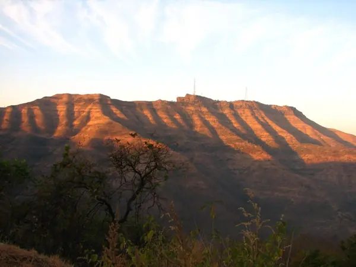

THE STORY BEHIND THE STONE
Why Sinhagad
matters.
The earlier name of this stronghold was Kondhana. In 1670, Maratha forces led by Tanaji Malusare captured it in a battle in which he died. The fort’s later history also includes repeated struggles between Maratha and Mughal forces.
Also known as Kondhana
Rulers & historical periods ＋
Individual ruling powers have not been established in this entry.
Recorded possession intervals may omit changes of control. Exact uninterrupted durations are not assumed from a ruler’s reign.
A PLACE WITHIN THE LARGER STORY
Turning points.

Explore Sinhagad ↗The kingdom takes shape
Sinhagad and the service of Tanaji Malusare
Sinhagad was historically known as Kondhana. The fort passed to the Mughals under the settlement of 1665. Maratha forces sought to recover it in 1670. Tanaji Malusare led the best-known assault on the stronghold. He died during the battle. The Maratha forces secured the fort. Suryaji Malusare is also associated with the successful operation. The episode became an enduring part of Maharashtra’s historical memory. The memorials on the fort honour service and sacrifice. Sinhagad also has a long history before and after this battle.


.jpg){kind=link}